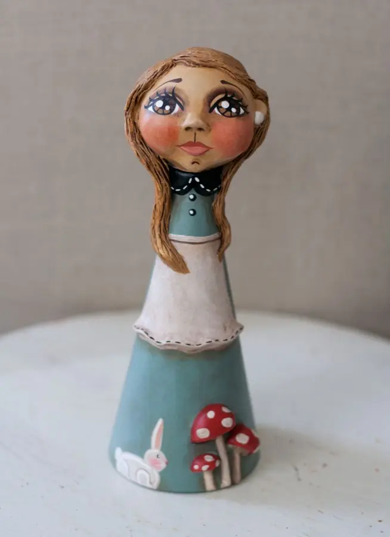
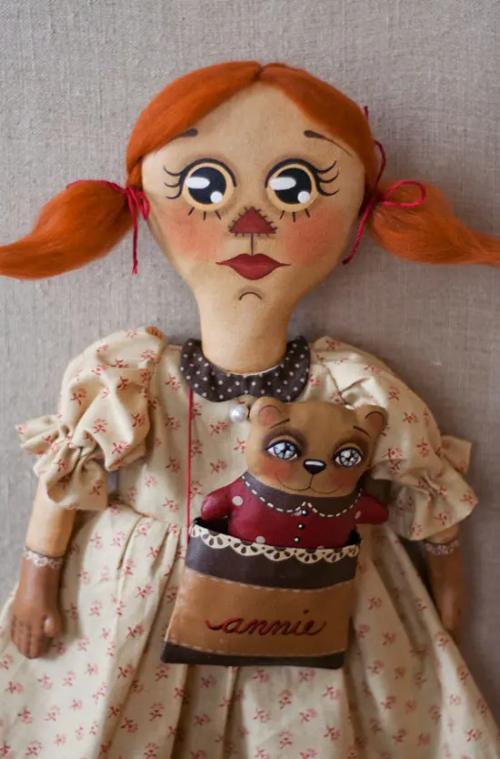
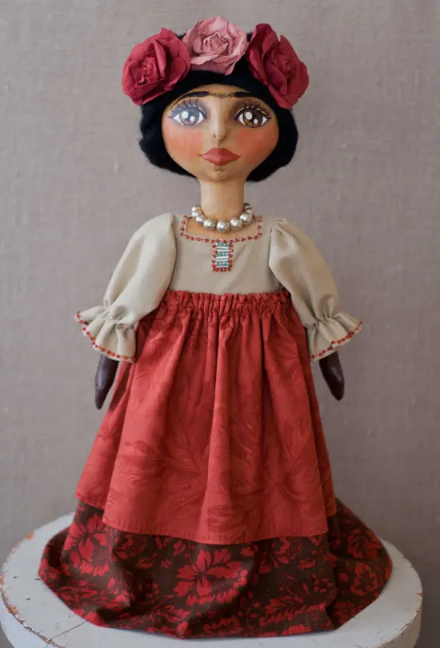
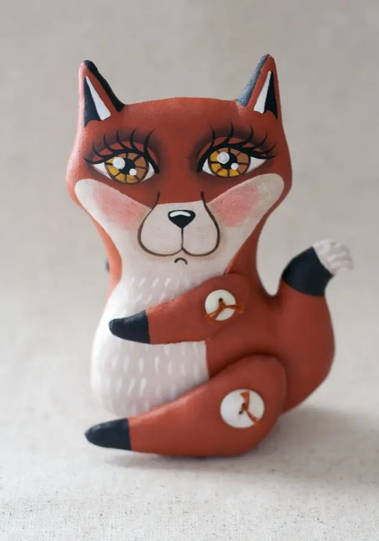
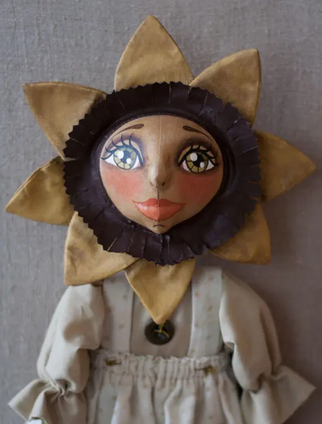
Miller Campbell Designs
Appalachian folk art by Kentuckian Rebecca F. Miller Campbell
One-of-a-kind primitive art dolls, signed and numbered, with paintings and bits of whimsy from the hills of Eastern Kentucky.
Email Rebecca See the doll galleries, from no. 1Named and numbered
My cloth dolls come signed, named, numbered and dated, with a Certificate of Authenticity. Because they are one of a kind, they will never be reproduced. Each gallery below is a page of that register.
1–100
- No. 1Naoma
- No. 2Virgil
- No. 3Lula Belle
- No. 4Little Miss Penelope
- …
- No. 98Alice in Wonderland
- No. 100Little Red Riding Hood
101–200
- No. 101AriaThionville, France
- No. 102Gabby
- No. 103Goldilocks & The Three Bears
- …
- No. 151Red Queen
- No. 152Mad Hatter
- No. 200Wicked
201–300
- No. 201Santa
- No. 202Dempsey
- …
- No. 250Annie
- No. 251Sunny
- No. 252Frida
- No. 284Tricia
Paperclay
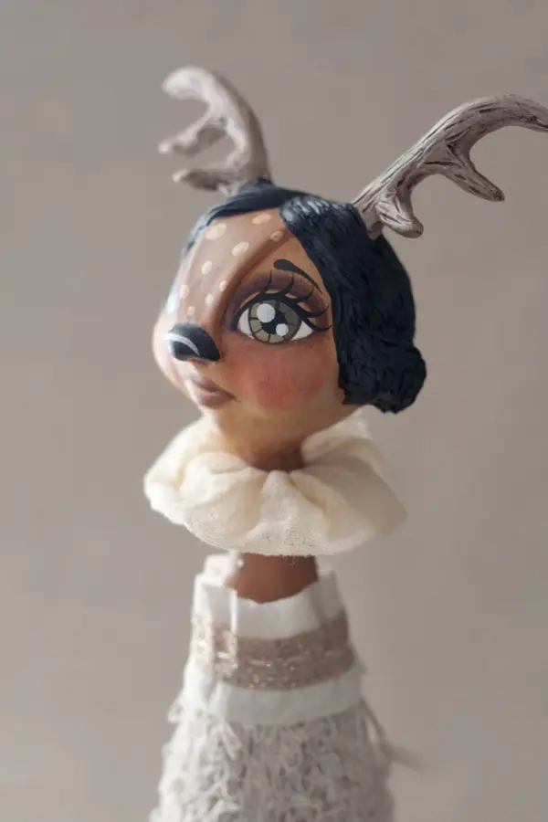
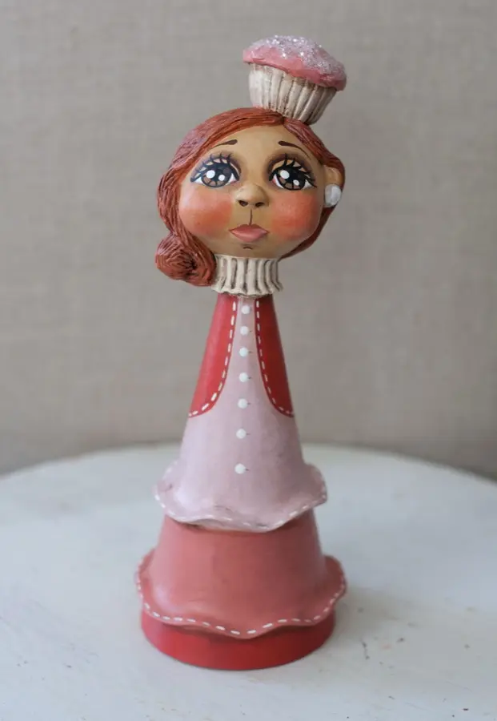
Many of my smaller dolls are made from paperclay, an air-dry clay that doesn’t have to be fired. All of them are hand-sculpted without molds, then primed, sanded, hand-painted and sealed, much like my cloth dolls.
Open Paperclay DollsHow each doll is made
“They look like wood!”
“What are these made of?”
I hear these quite often. Many of my cloth dolls do look like wood, but they are made from high-quality muslin. The wooden look comes from my painting process: layers and layers of paint, with light sanding between each one. A light touch reveals a softer, more supple texture, much like worn, broken-in leather.
I design, sew, stuff, hand-sew, paint, photograph and package every piece myself, clothing and accessories included. An average standing 14″ doll takes 15 to 20 hours of hands-on time, not counting drying time.
Inspiration comes from nature, the changing seasons, vintage postcards, antiques, stories read as a child, and memories of growing up in Appalachia, with its make-do attitude. I use vintage buttons and often stuff the torsos with rags, the way dolls were made long ago.
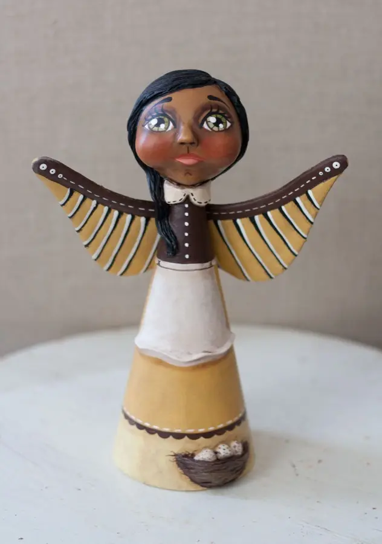
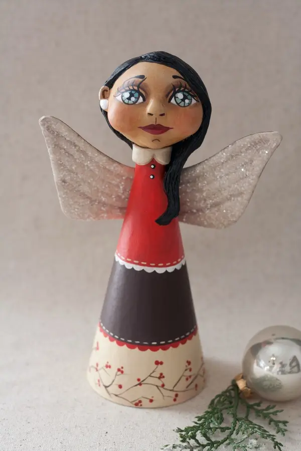
Paintings and ornaments
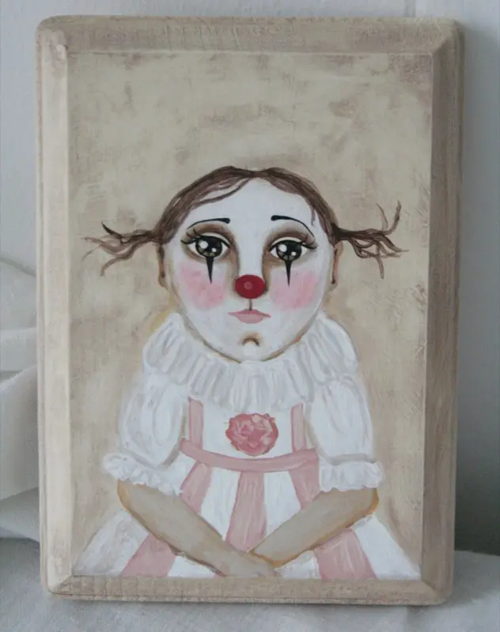
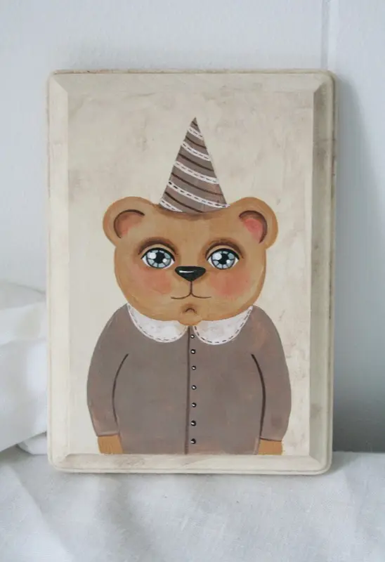
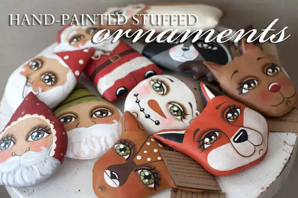
Ornaments for every season: anytime, Christmas and Halloween.
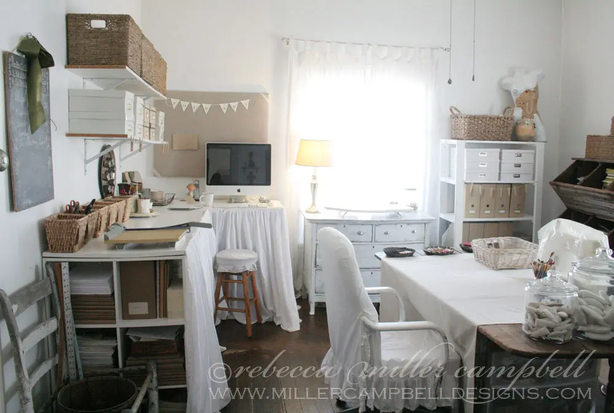
A lot happens in this little room
My home studio is where every creation is dreamed up, sewn, stuffed, painted, finished, photographed and packaged.
Christmas in Berea
I was honored to be asked to create a Christmas collection for the Kentucky Artisan Center in Berea. It festooned the three main trees in the lobby of the gallery: 283 pieces in all.
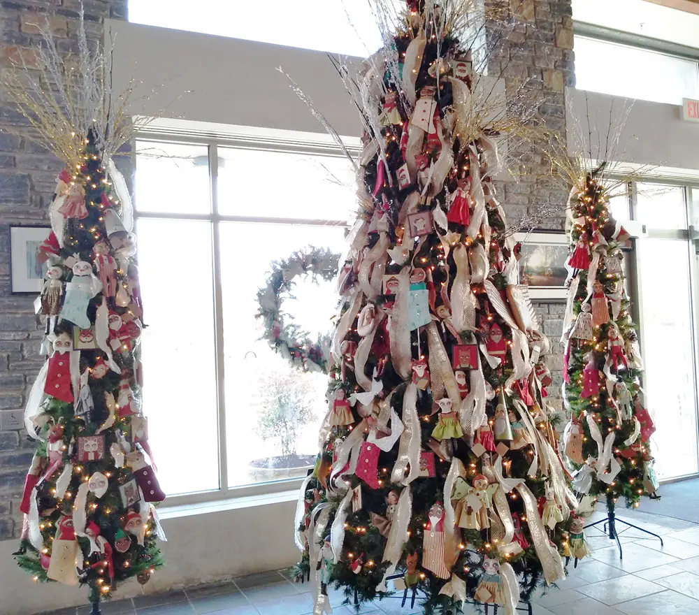
How to buy
Ask me about a doll you have seen, or about something you have in mind.
Email Rebecca madcackler@gmail.com- Online
-
PayPal is preferred for most orders, or Etsy checkout if you order through my Etsy shop. Every doll is packed carefully in a box made for its size, with no handling fee, and ships by USPS Priority Mail or UPS. I am happy to ship internationally: email me for a quote.
- In person
-
These shops carry a selection of my dolls and ornaments:
- Appalachian Artisan Center Hindman, KY
- Appalachian Fireside Gallery Berea, KY
- Kentucky Folk Art Center Morehead, KY
- Kentucky Artisan Center Berea, KY
- Locust Grove Museum Store Louisville, KY
- KY Historical Society Gift Shop Frankfort, KY
- Indigenous Cincinnati, OH
- New Morning Gallery Asheville, NC
- Commissions
I do occasionally take commissions. If my style might suit your idea, write to me. I can’t promise to make every doll that is requested, but I will consider your ideas.
- Wholesale
I wholesale my work to a handful of select galleries and shops. If you think my pieces would fit yours, please get in touch. Wholesale